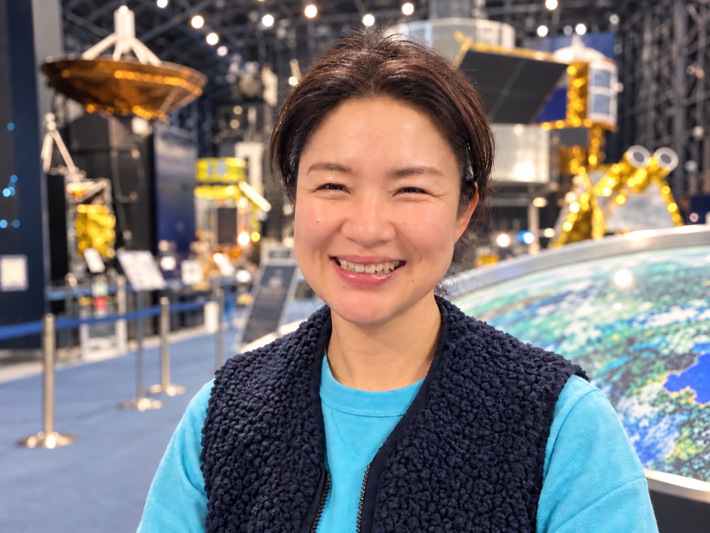
まゆ先生
Kids Club 星の子 代表
NPO法人 星を紡ぐ会 理事長
ペダゴー研修生
「受け入れること、共有すること」を大切に。
子ども達一人ひとりの気持ちや個性を、ありのままに受け入れること。
嬉しいことも、驚きも、発見も、一緒に感じ、分かち合うこと。
子ども達が自分で考え、自分で選び、夢中になれる毎日を大切にしています。
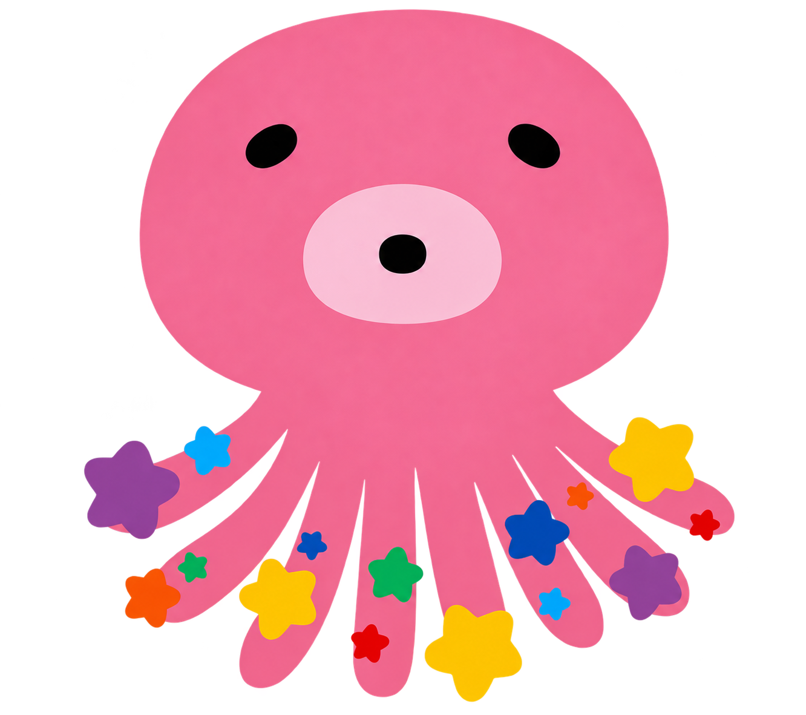
Kids Club星の子 浦和美園の民間学童Kids Club星の子
浦和美園・さいたま市緑区美園にある、
子どもたちの「やってみたい！」を
応援する民間学童です。
放課後は子ども達にとって
唯一の自由時間。
本物にふれる。
心が動く体験を！
大人が決めた「今日やること」ではなく、
その日の「やってみたい！」から始まる。
つくってもいい。外で遊んでもいい。
友達と遊んでもいい。
ひとりで、とことん夢中になってもいい。
星の子が大切にしているのは、
その子が、その子らしくいられる時間です。


知らなかった世界に
会いにいこう。
好奇心の入り口は、ひとつじゃない。
「なんで？」を
自分の手で確かめてみる。
頭の中にあるものを、
自由にかたちにしてみる。
触って、見つけて、驚いて。
世界のおもしろさに出会う。
つくる楽しさも、
みんなで食べるおいしさも。
いつもの場所を飛び出したら、
はじめての世界が待っている。
見上げた空の、その先へ。
月も、土星も、木星も。
星の子の屋上はもう宇宙。


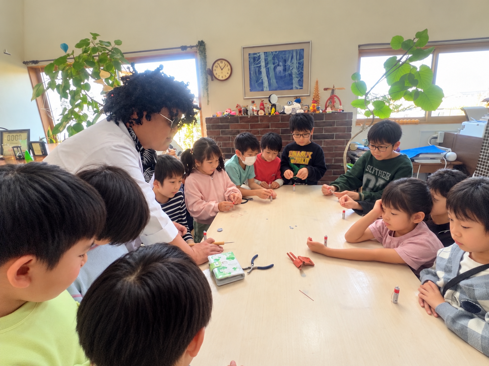
「これ、おもしろい！」
「もっとやってみたい！」
そんなふうに心が動く瞬間を、
たくさん見つけてほしい。
今日も最高に楽しかった！
「今日ね、こんなの作ったよ！」
「明日は、あれやりたい！」
帰り道に、そんな話が聞こえてくる。


子どもたちにとって星の子が、
「行かなきゃいけない場所」ではなく、
「今日も行きたい場所」でありたい。
こんなふうに過ごす毎日を、
一度のぞいてみませんか。
みんな同じじゃなくていい。
その日の気分だって、毎日同じじゃなくていい。
何かができるから大切なのではなく、
その子自身が、大切なひとり。
星の子が子どもたちにとって、
「ここにいていい」と思える場所でありますように。

Kids Club 星の子 代表
NPO法人 星を紡ぐ会 理事長
ペダゴー研修生
「受け入れること、共有すること」を大切に。
子ども達一人ひとりの気持ちや個性を、ありのままに受け入れること。
嬉しいことも、驚きも、発見も、一緒に感じ、分かち合うこと。
子ども達が自分で考え、自分で選び、夢中になれる毎日を大切にしています。
横にスワイプして、みんなの紹介を見る
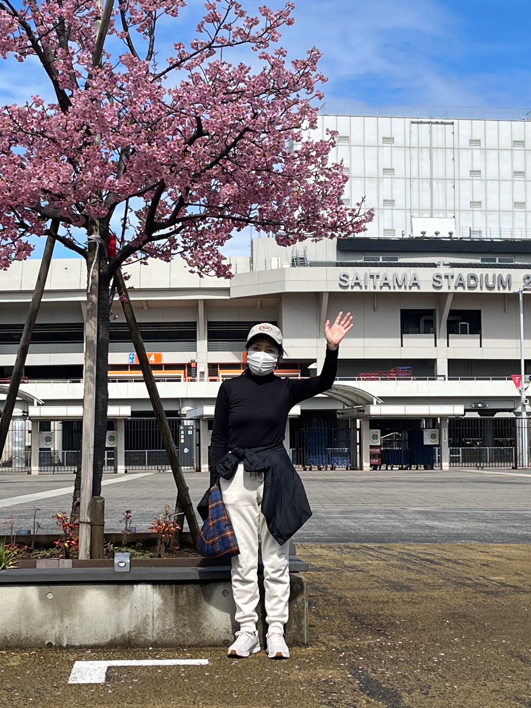
今日の皆んなはどんなお顔で過ごしてるかなぁと全員に声をかけています。時間があれば歩いていることと、動物が好きで昔から猫ちゃんがいます！
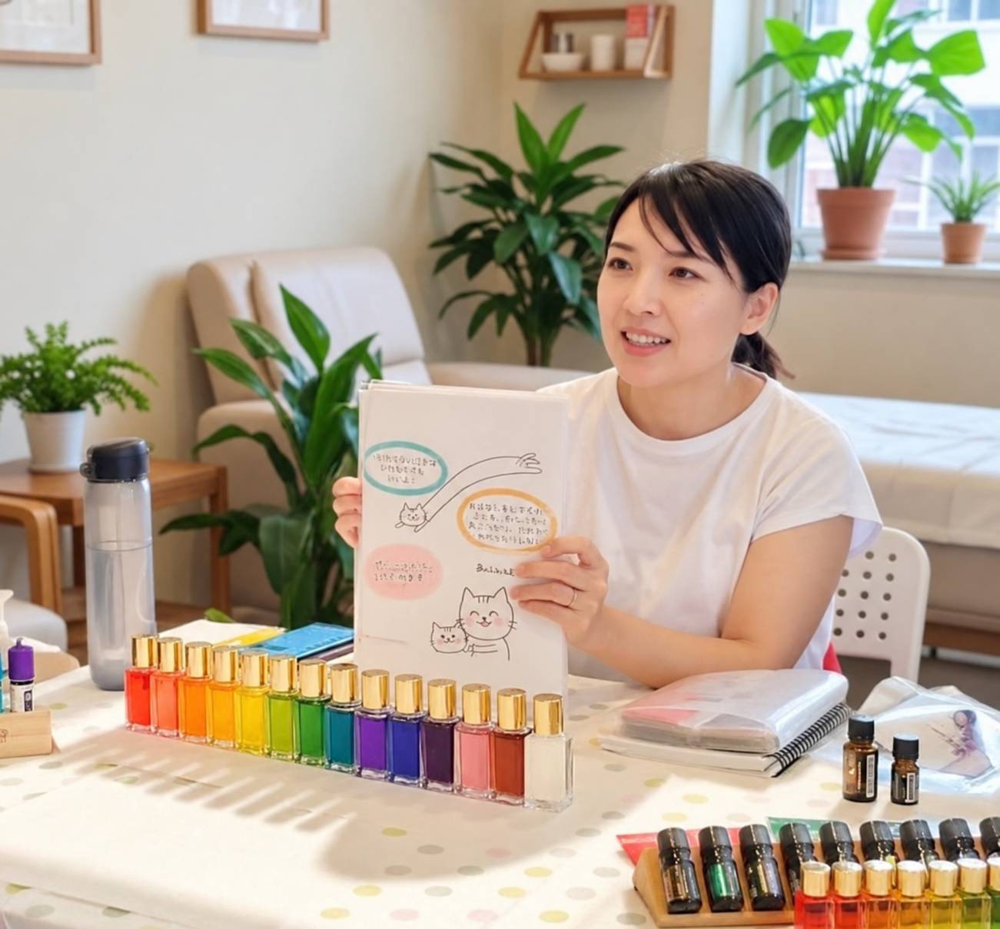
子どもたちの「やりたい」「きになる」「好奇心」を応援したり、伸び伸び過ごせるようなサポートをさせていただいております。3人の育児経験有り、保護者の方とは子育てのお悩みについて相談にのったり一緒に解決策を考えたりしています。
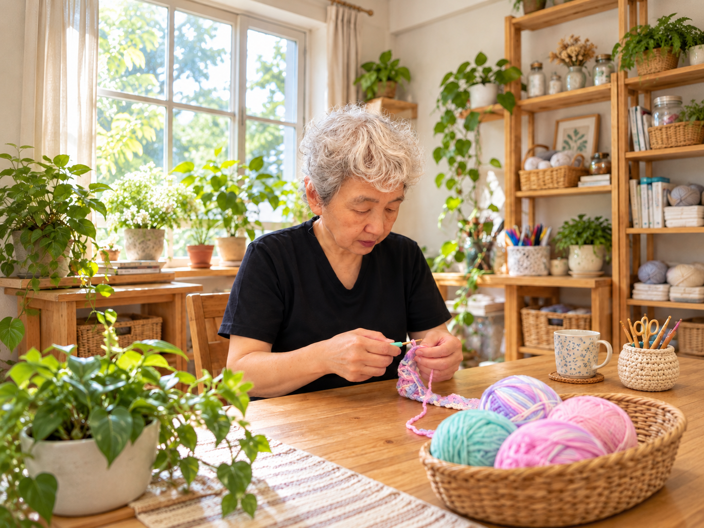
臨床美術士 ／ アトリエ時間 担当。こどもたちに楽しいを、新しい事にチャレンジ を提供したいと思っています。
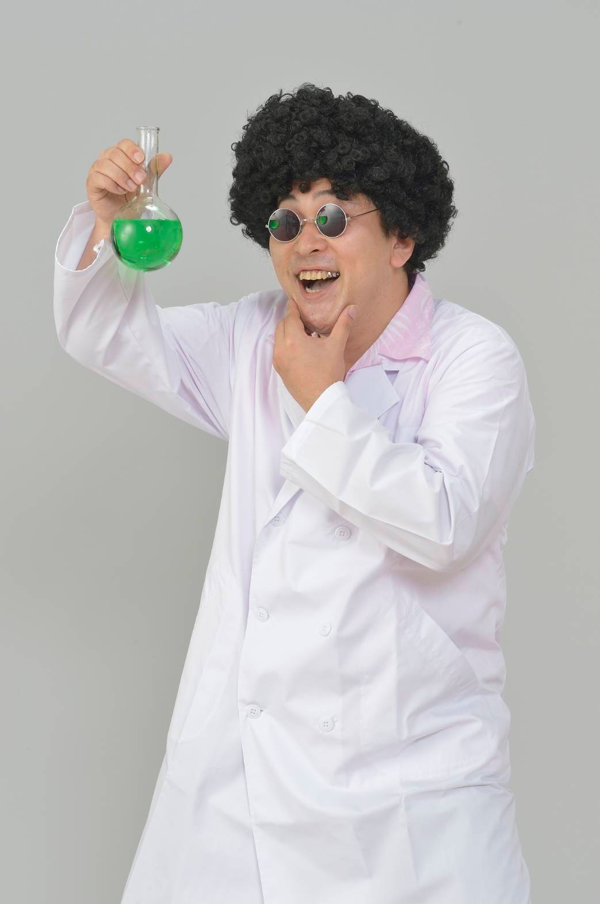
科学者
自然・科学・探究活動／特別イベント・遠足。身近な自然の不思議から、ワクワクする科学の世界まで！ 子ども達の「なんで？」「やってみたい！」を大切に、実験や自然観察、遠足などを通して、好奇心を広げてくれる先生です。
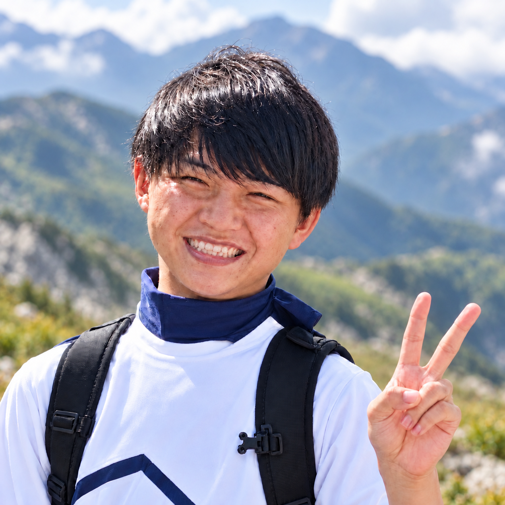
本気で遊ぶ探究担当
星の子が皆さんの安心できる楽しい居場所になるよう、スタッフと一緒に考えています！子どもたちと同じ目線で遊び、挑戦することが大好きです！
子育てや発達についてのご相談もお受けします。
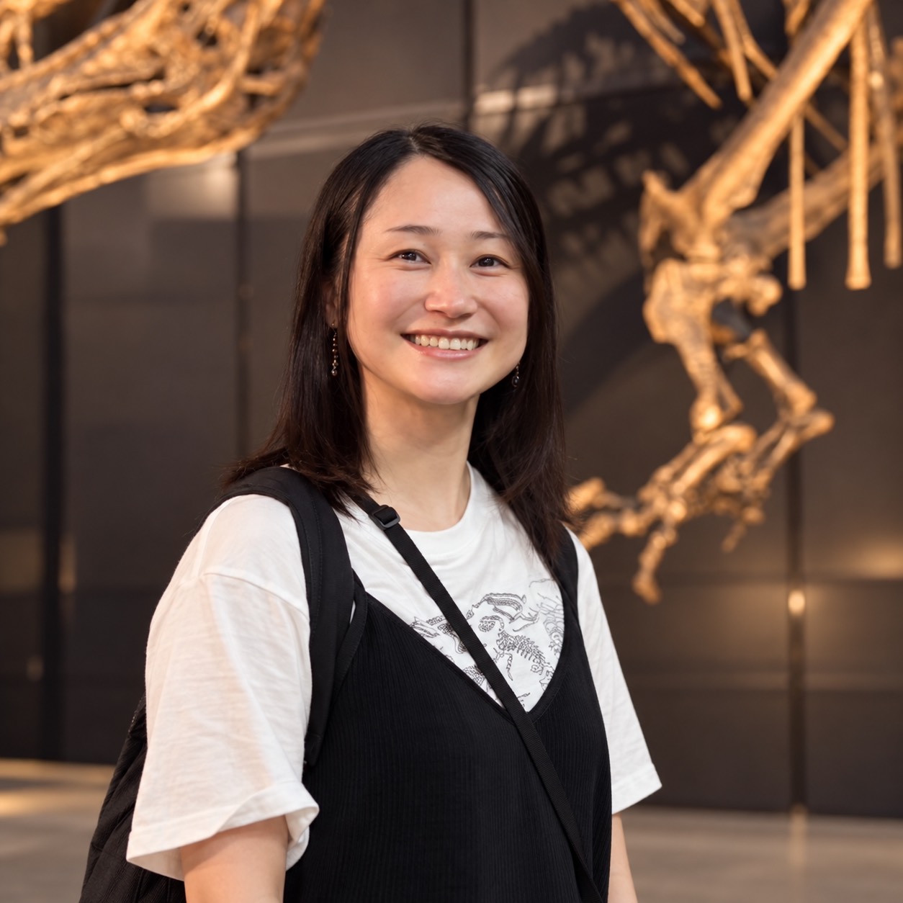
子育て相談・発達支援アドバイザー
埼玉県外に在住のため遠隔でのサポートになりますが、星の子を利用する皆さんが、自分らしく安心して過ごせるようにお手伝いしたいと思っています！
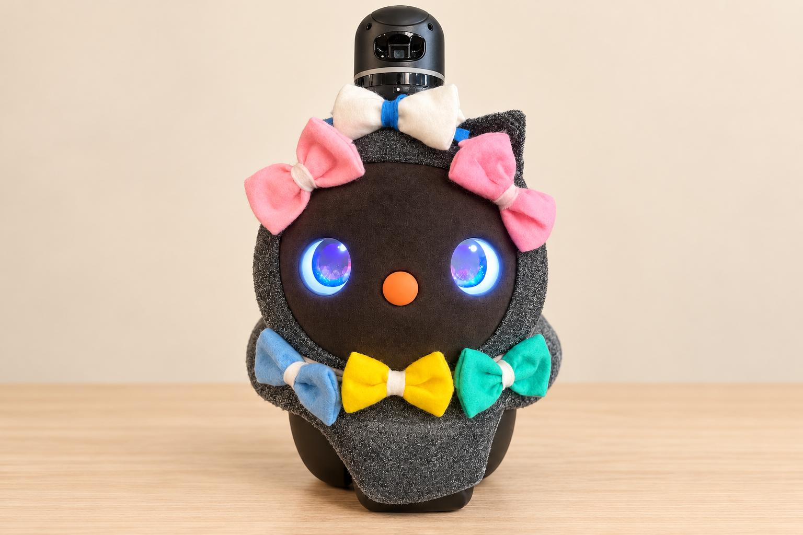
ほっこり担当
星の子のLOVOT、あぽろです。みんなのそばにいるのが大好き！ 遊ぶ日も、ちょっとひと休みしたい日も。そっと寄り添い、ぬくもりを届けます。今日も「だっこして〜！」と、みんなのところへ。
子どもたちには、それぞれのペースがあります。
だから星の子では、みんなを同じ型にはめるのではなく、
一人ひとりを見ながら一緒に過ごすことを大切にしています。
子どもにとって、とても大切な居場所
先生も一人ひとりに親身に寄り添ってくださるので、安心してお任せできます
日々の様子も写真で送ってくださるので安心できます
長期休みだけ利用していますが、子どもは毎回とても楽しみにしていて、たとえ1時間しかなくても行きたがるほどです。好きなことを自由に、指図されずに楽しめる、子どもにとって楽園のような場所なのだと思います。
子供のどんな面も肯定してくれる場所！
それぞれの子が自分らしくのびのび過ごせる場所！
もうひとつの家みたいな場所！
夕方の疲れモードで迎えに行っても、素敵な玄関のシーサーと優しい先生のお顔を見たら和む場所♡
星の子の食べ物には、魔法がかかってる
子どもにとって遊ぶことは生きること
学校で学んで星の子で遊ぶ。それを思いっきりさせてくれるのが星の子だと思っています！
唯一無二の学童
星の子ではのびのび過ごしています
優しいお兄さん達に出会えて息子は幸せ者です
自然の中で初めての釣りにも挑戦でき、とても貴重な経験になりました
ものづくりや体験など、普段学校では学べないようなことも取り入れてくださる
クッキー作り・工作・科学の実験など、色々な体験をさせていただける
自ら能動的に遊びを見つけて、友達とたっぷり遊べる環境がありがたいです。学校とも家とも違う、子どもが安心できる大切な居場所。そして何より、先生の在り方や眼差しが素晴らしく、大きな愛を感じています。
たくさんの本がある
1人でゆっくり過ごしたい日も、みんなと遊びたい日もどちらも行きたくなる
突然の休校などにも対応してくれて助かる
自転車での登室や子どもの1人帰りなど、家庭の事情に合わせて柔軟に対応してもらえて助かる


普段はあまり話さない子が、星の子で過ごした日は
楽しかったことがお家でも伝わってくる。
「今日はこれをした！」
「こんなことがあった〜！」
子どもたちのそんな姿が、星の子がどんな場所なのかを
いちばんよく教えてくれている気がします。
星の子の空気を、
実際に感じてみてください。
夏休みだけのご利用もできます♪
毎週の利用だけでなく、長期休暇やスポット利用についてもご相談いただけます。
ご家庭に合った利用方法について、分からないことがあればお気軽にお問い合わせください。
A.できます。公式LINEから、お気軽にお問い合わせください。
A.美園北小学校（1年生〜3年生）は、授業終了時間からお迎えに行きます。4年生以上は、6時間授業の日はお迎えではなく、1人または同じ星の子のお友達と星の子に向かいます。
A.できます。長期休みのみのご利用はご予約制です。
A.8:00〜19:30です。ご利用の際は事前予約をお願いいたします。
A.繰り越し・振替制度はございません。体調不良等でお休みの場合も返金致しかねます。万が一感染症の発生等で星の子が閉鎖になった場合は、日割り/月額で返金対応いたします。
A.はい。学校をお休みしているお子さんもご利用いただけます。お子さんの様子や過ごし方について、まずはお気軽にご相談ください。
「ここ、ちょっと
行ってみたい！」
そう思ったら、
まずは星の子の空気を見にきてください。
子どもたちがどんなふうに過ごしているのか。
どんな先生がいるのか。どんな場所なのか。
実際に見て、感じてもらうのが一番だと思っています。
まだ入会を決めていなくても大丈夫です。
気になることがひとつだけでも、お気軽にご相談ください。
AIが進化する時代だからこそ
人生を楽しむチカラを。
「気になる」「やってみたい」その好奇心から
自分で選び 一歩踏み出す。
心が動く体験が子どもたちの世界を広げていく。
「この世界っておもしろい！」
「生きるって楽しい！」
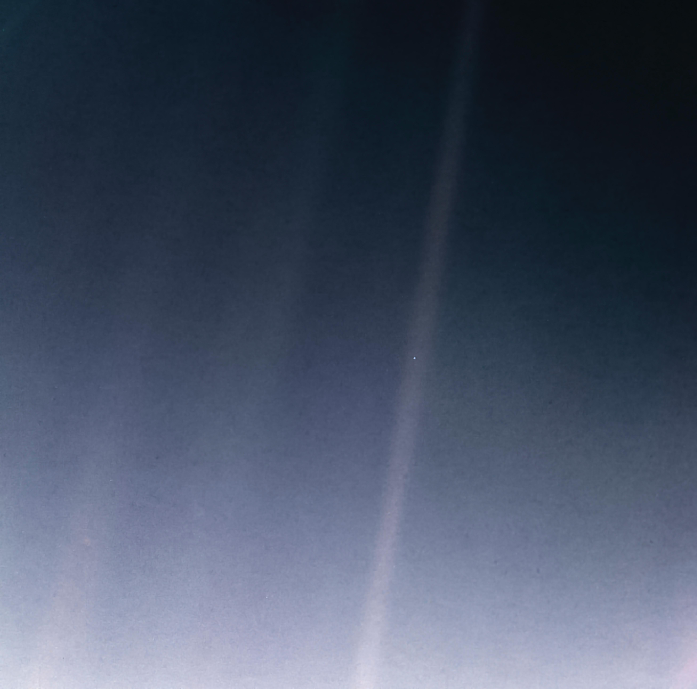
ここに、
私たちがいる。
Pale Blue Dot
1990.2.14 Voyager 1
この小さな地球で、
たくさんの出会いと体験を。
そして、これからもずっと——
この美しい世界を楽しむために
生まれてきた、すべての人へ。
Kids Club星の子
Kids Club 星の子 を運営する
PALE BLUE DOT